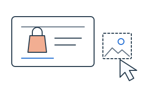
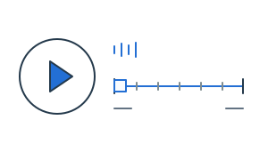

2026.02 – 2026.07
AI 활용 반응형 웹 UI/UX 제작
그린컴퓨터아카데미 · 기업맞춤형 프로젝트
쇼핑몰 주요 화면을 기획하고 PC·모바일 반응형 UI를 설계했습니다. 디자인 시안 비교와 정보 구조 개선, QA 및 개발 전달 문서화까지 경험했습니다.
PROFILE
2023.01 ~ 2025.12/ 3년
프리랜서 · 쇼핑몰 AMD / 콘텐츠 디자인
2018.02 ~ 2020.09/ 2년 8개월
병원코디네이터 · 원무과 사원
2016.09 ~ 2017.09/ 1년 1개월
병원코디네이터 · 원무과 사원
안녕하세요! 어떤 이야기가 궁금하신가요?
SKILLS

2026.02 – 2026.07
그린컴퓨터아카데미 · 기업맞춤형 프로젝트
쇼핑몰 주요 화면을 기획하고 PC·모바일 반응형 UI를 설계했습니다. 디자인 시안 비교와 정보 구조 개선, QA 및 개발 전달 문서화까지 경험했습니다.

2023.01 – 2025.12
프리랜서 · 쇼핑몰 MD Assistant
상품 등록과 상세페이지·배너 등 이커머스 콘텐츠를 제작했습니다. 상품 정보를 정리하고 요청사항과 수정 피드백을 디자인에 반영했습니다.

2020.08 – 2020.10
두드림컴퓨터학원 · 디지털디자인 교육
영상 편집과 유튜브 콘텐츠 제작 과정을 이수하며 영상 구성과 편집 기초를 학습했습니다.
검색과 추천 정보가 분산되어 핵심 정보의 우선순위가 모호했습니다. 서비스의 개성과 주요 행동이 한눈에 드러나지 않았습니다.
검색을 핵심 액션으로 정리하고, 블루 중심의 일관된 톤과 명확한 콘텐츠 위계를 적용했습니다. 사용자가 서비스를 이해하고 탐색할 수 있도록 화면 흐름을 개선했습니다.
기존 상세페이지는 정보량이 많지만 핵심 장점과 구매 포인트가 한눈에 정리되지 않았습니다. 제품 특징과 기능 설명이 길게 이어져 필요한 정보의 우선순위를 파악하기 어려웠습니다.
핵심 메시지와 제품 강점이 먼저 보이도록 정보 구조를 재정리했습니다. 비교, 활용 장면, 기능 설명의 흐름을 구분해 사용자가 제품의 특징을 쉽게 이해할 수 있도록 구성했습니다.
요구사항과 현재 구조를 분석하고 문제점을 정리합니다.
여러 방향을 비교하고 개선 방향을 도출합니다.
일정과 구현 범위를 고려해 시안을 구체화합니다.
의견을 반영하며 완성도를 높입니다.
협업 과정 재구성 · 실제 대화 기록이 아닌 포트폴리오용 예시입니다.

직접 디자인한 캐릭터의 형태와 비율 정리
표정·의상 등 변형 가능한 파츠와 적용 영역 정의
원본 캐릭터 시트와 공통 가이드를 팀원에게 공유
원본 디자인과 AI 생성 결과를 비교하고 차이 확인